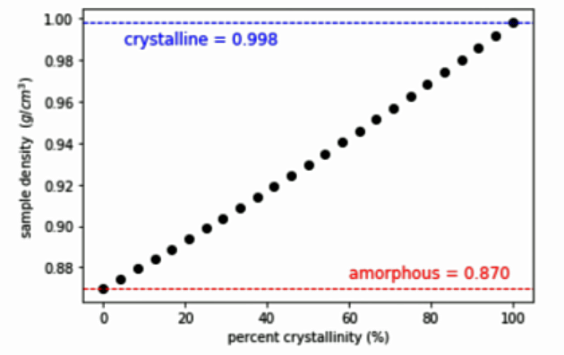

4. Plotting and Equation Solving#
Learning Objectives
Be able to:
import libraries
numpy,sympy,matplotlib;symbolically manipulate an equation using
sympy.solve();generate x and y data for a function using
numpy.linspace();plot the x, y data using
matplotlib.pyplot.plot();add horizontal lines and text to a plot; and
use pandas
read_csvto open a data filegroup (aggregate) data using pandas:
groupby(),sum(),mean()
You will need the following extensions:
import numpy as np
import matplotlib.pyplot as plt
import pandas as pd
from sympy.solvers import solve #for solving equations symbolically
from sympy import symbols #for solving equations symbolically
4.1. Hints for Problem 1#
For this problem you will need to define a function to find the crystallinity based on the values of density as shown above. Your function should look like:
def crystallinity(density_s, density_a, density_c):
percent_crys= # finish this statement
return percent_crys
crystallinity(0.925, 0.870, 0.998) # checking your function output
Write a function that takes percent_crystallinity, crystalline_density and amorphous_density and returns the sample density. For example,
def sample_density(percent_crystallinity, density_a, density_c):
density_s= #finish this equation
return density_s
To find the equation for the sample density, you will want to solve the crystallinity equation for the sample_density. You can do this using sympy after loading the following packages:
from sympy.solvers import solve #for solving equations symbolically
from sympy import symbols #for solving equations symbolically
4.1.1. Example of solving an equation#
Let’s say you wanted to solve the equation \(a x^2 + b x + c = d\). First, we tell python that a,b,c,d,x are symbols.
from sympy.solvers import solve #for solving equations symbolically
from sympy import symbols #for solving equations symbolically
a,b,c,d,x = symbols('a b c d x')
Then we can use the solve command.
Important
The equation that goes into the solve command must equal zero so we rewrite \(a x^2 + b x + c = d\) as \(a x^2 + b x + c - d=0\). Notice that we do not include the “=0” part in the solve function below because that is assumed.
# solve for x
solve(a*x**2+b*x+c-d, x)
[(-b - sqrt(-4*a*c + 4*a*d + b**2))/(2*a),
(-b + sqrt(-4*a*c + 4*a*d + b**2))/(2*a)]
def x_solution(a,b,c,d):
return (-b + np.sqrt(-4*a*c + 4*a*d + b**2))/(2*a)
x_solution(2,9,5,10)
0.5
x_solution(2,9,0.4,10)
0.8904617494884413
Let’s find our x solution for different values of the parameter “d”
The np.linspace(min, max, numpts) creates evenly spaced points between two numbers. The number of points you want is given by the third number.
dd=np.linspace(0,5,5) #first pt =0, last point=5, total points=5
print('linspace list dd = ',dd)
[x_solution(2,9,5,d) for d in dd] #list comprehension loop
linspace list dd = [0. 1.25 2.5 3.75 5. ]
[-0.6492189406417879,
-0.4646428928642874,
-0.2974375810233365,
-0.14346255670591024,
0.0]
Let’s use the above method to find x solutions for 20 d values between 0 and 50. Example annotations are also included in the plot.
d=np.linspace(0, 50, 20) #creates 20 evenly spaced d-values from 0 to 50
x_sol=x_solution(2,9,5,d)
plt.plot(d,x_sol,'ro')
plt.xlabel('d')
plt.ylabel('x solution')
plt.annotate('$a x^2 + b x + c = d$', xy=(5, 2.5), color='b') # you can include text on your plot
plt.annotate('$a x^2$', xy=(40, 0.5), color='b') # you can include text on your plot
plt.show()
4.2. Hints for Problem 2#
Last week we calculated the value of \(\left(4\times \frac{\text{pts in circle}}{\text{total num pts}}\right)\) for 1000 random points. This week you will plot the value as a function of the number of random points. That is, you want to write a function that takes a parameter, \(n\), for the total number of points and returns the value \(\left(4\times \frac{\text{pts in circle}}{\text{total num pts}}\right)\).
My code for 1000 random points was:
xcoord=(2)*np.random.random(1000)-1 #1000 random pts from -1 to 1
ycoord=(2)*np.random.random(1000)-1 #1000 random pts from -1 to 1
magnitude=np.sqrt(xcoord**2+ycoord**2) #length from center (0,0) to point
mag_test=magnitude<=1
4*len(xcoord[mag_test])/len(xcoord)
Check what len(xcoord[magnitude<=1]) and len(xcoord) does in my code above.
Since your n value in this problem will vary from 100 to 1,000,000 (i.e. several orders of magnitude) it is better to use geomspace() rather than linspace(). geomspace() gives pts spaced on a log scale which is much better when our values change by orders of magnitude.
Don’t forget that your function above requires an integer to be input so you will want to make sure geomspace() is giving you an integer or round your list to the nearest integer.
xdata=np.geomspace(100,1e6,num=50, dtype=int) #tell it to round to the closest integer dtype=int
print('geomspace: notice the nice sample of values across all magnitudes\n')
print(xdata)
# notice the increasing step size as our numbers get larger
# compare this to linspace
print('\nlinspace: notice this skips from 100 to 20506 for the first point\n')
print(np.linspace(100, 1e6, num=50, dtype=int))
geomspace: notice the nice sample of values across all magnitudes
[ 100 120 145 175 212 255 308 372 449
542 655 790 954 1151 1389 1676 2023 2442
2947 3556 4291 5179 6250 7543 9102 10985 13257
15998 19306 23299 28117 33932 40949 49417 59636 71968
86851 104811 126485 152641 184206 222299 268269 323745 390693
471486 568986 686648 828642 1000000]
linspace: notice this skips from 100 to 20506 for the first point
[ 100 20506 40912 61318 81724 102130 122536 142942 163348
183755 204161 224567 244973 265379 285785 306191 326597 347004
367410 387816 408222 428628 449034 469440 489846 510253 530659
551065 571471 591877 612283 632689 653095 673502 693908 714314
734720 755126 775532 795938 816344 836751 857157 877563 897969
918375 938781 959187 979593 1000000]
4.3. Hints for Problem 3#
Import the csv file titanic.csv and (a) determine the percentage of woman that survived and the percentage of men that survived and (b) determine the average ticket price (Fare) for those that survived versus those that did not survive. 0 = did not survive. 1 = survived.
Last week we learned how to use pandas to import an excel file; clean imported data including dropping NAN, filling NAN, renaming columns, dropping rows, sorting, slicing, and adding new columns.
*Now we need to learn how to group (aggregate) data: groupby(), sum(), mean()
Let’s take a look at a data file containing information about the insulation thickness from a wire coat machine versus several parameters.
# This is a direct read of the file "raw_clean_cable_insulation.csv" from a google drive.
raw=pd.read_csv('https://drive.google.com/uc?id=1zmsrtUgXZhJJzERQXFKkUVoCD1zNbBSr')
raw.head(3) #looking at only first 3 records
| Unnamed: 0.1 | Unnamed: 0 | ExtrTemp | LineSpeed | WaterTemp | Measure | City | |
|---|---|---|---|---|---|---|---|
| 0 | 0 | 0 | 234.83 | 55.28 | 26.67 | 170.67 | Kairo |
| 1 | 1 | 1 | 235.09 | 54.13 | 26.97 | 182.86 | Kairo |
| 2 | 2 | 2 | 235.09 | 54.33 | 27.46 | 182.74 | Kairo |
# dropping first two columns here since I don't need them
df=raw.drop(['Unnamed: 0.1','Unnamed: 0'],axis=1)
df
| ExtrTemp | LineSpeed | WaterTemp | Measure | City | |
|---|---|---|---|---|---|
| 0 | 234.83 | 55.28 | 26.67 | 170.67 | Kairo |
| 1 | 235.09 | 54.13 | 26.97 | 182.86 | Kairo |
| 2 | 235.09 | 54.33 | 27.46 | 182.74 | Kairo |
| 3 | 235.05 | 55.00 | 26.83 | 175.49 | Kairo |
| 4 | 235.04 | 55.26 | 26.62 | 172.80 | Kairo |
| ... | ... | ... | ... | ... | ... |
| 9992 | 234.92 | 55.09 | 26.98 | 173.84 | Cairo |
| 9993 | 235.22 | 55.91 | 27.30 | 171.86 | Cairo |
| 9994 | 235.13 | 55.43 | 26.99 | 173.59 | Cairo |
| 9995 | 235.05 | 54.73 | 26.73 | 177.21 | Cairo |
| 9996 | 235.10 | 54.57 | 27.21 | 180.25 | Cairo |
9997 rows × 5 columns
# rounding some of the numbers so they group better
# i.e. 234.92 and 235.22 etc should all just be 235.
# you won't need to do this for the titanic data
df['LineSpeed']=df.loc[:,'LineSpeed'].round(1)
df['ExtrTemp']=df.loc[:,'ExtrTemp'].round(0)
df
| ExtrTemp | LineSpeed | WaterTemp | Measure | City | |
|---|---|---|---|---|---|
| 0 | 235.0 | 55.3 | 26.67 | 170.67 | Kairo |
| 1 | 235.0 | 54.1 | 26.97 | 182.86 | Kairo |
| 2 | 235.0 | 54.3 | 27.46 | 182.74 | Kairo |
| 3 | 235.0 | 55.0 | 26.83 | 175.49 | Kairo |
| 4 | 235.0 | 55.3 | 26.62 | 172.80 | Kairo |
| ... | ... | ... | ... | ... | ... |
| 9992 | 235.0 | 55.1 | 26.98 | 173.84 | Cairo |
| 9993 | 235.0 | 55.9 | 27.30 | 171.86 | Cairo |
| 9994 | 235.0 | 55.4 | 26.99 | 173.59 | Cairo |
| 9995 | 235.0 | 54.7 | 26.73 | 177.21 | Cairo |
| 9996 | 235.0 | 54.6 | 27.21 | 180.25 | Cairo |
9997 rows × 5 columns
Let’s find the percentage of Measurements made in Alexandria vs the total number of measurements.
Let’s also find the average WaterTemp for all measurements made in Alexandria at an ExtrTemp of 235.0
# groupby collects all records for the different cities and then
# .count() counts how many records there are in each city grouping
dfgroup=df.groupby(['City']).count()
dfgroup
| ExtrTemp | LineSpeed | WaterTemp | Measure | |
|---|---|---|---|---|
| City | ||||
| Alexandria | 5520 | 5520 | 5520 | 5520 |
| CAI | 17 | 17 | 17 | 17 |
| Cairo | 4413 | 4413 | 4413 | 4413 |
| Kairo | 47 | 47 | 47 | 47 |
# using .sum() we can get the total number of records in each column
# by default .sum() sums down columns
dfgroup.sum()
ExtrTemp 9997
LineSpeed 9997
WaterTemp 9997
Measure 9997
dtype: int64
# calculating percent of records in Alexandria vs total of 9997
# using .loc[] to pull from dataframe "dfgroup.loc[row, column]"
dfgroup.loc['Alexandria','Measure']/9997*100 #percent
55.21656496949085
# now we are grouping by two columns
# we first collect the Cities
# then group within each city by the ExtrTemp (extruder temperature)
# here we take the mean or average value in these two categories for each column
dfmean=df.groupby(['City','ExtrTemp']).mean()
dfmean
| LineSpeed | WaterTemp | Measure | ||
|---|---|---|---|---|
| City | ExtrTemp | |||
| Alexandria | 234.0 | 54.894118 | 27.056471 | 170.712353 |
| 235.0 | 55.003924 | 26.999927 | 175.425584 | |
| 236.0 | 55.115152 | 27.000606 | 180.169091 | |
| CAI | 235.0 | 55.176471 | 26.965882 | 174.288235 |
| Cairo | 234.0 | 54.980645 | 27.035806 | 169.769032 |
| 235.0 | 54.994089 | 26.993054 | 175.444202 | |
| 236.0 | 55.014706 | 27.005294 | 181.228824 | |
| Kairo | 235.0 | 55.093617 | 26.941915 | 174.370426 |
# the mean value of WaterTemp in Alexandria at an ExtrTemp of 235 degrees is
# note row is ('Alexandria',235.0) and the column we want is 'WaterTemp'
dfmean.loc[('Alexandria',235.0), 'WaterTemp']
26.999926645883
4.3.1. Pivot Table#
For a lot more control, we could use pivot_table to specify different aggregation functions for each column of values we want to analyze. You should be able to do what you want with groupby() but the pivot_table is a more manual way to specify many options.
pd.pivot_table(df, values=['Measure', 'WaterTemp','LineSpeed'], index=['City', 'ExtrTemp'],
aggfunc={'Measure': np.mean,
'WaterTemp': [min, max, np.mean],
'LineSpeed':[np.sum,np.mean,np.size]}).style
| LineSpeed | Measure | WaterTemp | ||||||
|---|---|---|---|---|---|---|---|---|
| mean | size | sum | mean | max | mean | min | ||
| City | ExtrTemp | |||||||
| Alexandria | 234.000000 | 54.894118 | 34 | 1866.400000 | 170.712353 | 27.560000 | 27.056471 | 26.520000 |
| 235.000000 | 55.003924 | 5453 | 299936.400000 | 175.425584 | 27.700000 | 26.999927 | 26.150000 | |
| 236.000000 | 55.115152 | 33 | 1818.800000 | 180.169091 | 27.440000 | 27.000606 | 26.420000 | |
| CAI | 235.000000 | 55.176471 | 17 | 938.000000 | 174.288235 | 27.330000 | 26.965882 | 26.440000 |
| Cairo | 234.000000 | 54.980645 | 31 | 1704.400000 | 169.769032 | 27.410000 | 27.035806 | 26.580000 |
| 235.000000 | 54.994089 | 4348 | 239114.300000 | 175.444202 | 27.660000 | 26.993054 | 26.290000 | |
| 236.000000 | 55.014706 | 34 | 1870.500000 | 181.228824 | 27.300000 | 27.005294 | 26.700000 | |
| Kairo | 235.000000 | 55.093617 | 47 | 2589.400000 | 174.370426 | 27.460000 | 26.941915 | 26.380000 |
4.4. Exercises#
4.4.1. Problem 1:#
Computations of the Density and Percent Crystallinity of Polyethylene (Callister 10th ed., section 14.11)
The % crystallinity is given by:
(1) Write a function that calculates the percent crystallinity of a branched polyethylene sample \(\rho_s\) that has a density of \(0.925\ 𝑔\ 𝑐𝑚^{-3}\) . The density of a totally amorphous material \(\rho_a\) is \(0.870 \ 𝑔\ 𝑐𝑚^{-3}\) and the density of a totally crystalline \(\rho_c\) material is \(0.998 \ 𝑔\ 𝑐𝑚^{-3}\) .
(2) Calculate the sample density \(\rho_s\) versus % crystallinity and reproduce the plot below (including the horizontal lines and text). To find the equation for the sample density use the solve commands from sympy to solve the above crystallinity equation for \(\rho_s\). An example of using solve can be found in this lesson.
(3) Export your data to an excel file.
{kind=link}
4.4.2. Problem 2:#
Write a function that finds “x” random points in a square of edge length 2 centered at (0,0). Determines how many of these points are contained in a circle of radius 1 centered at (0,0). Returns the value \(\left(4\times \frac{\text{pts in circle}}{\text{total num pts}}\right)\). Plot the value \(\left(4\times \frac{\text{pts in circle}}{\text{total num pts}}\right)\) versus number of points, x. Your x should vary between 100 and 1e6. Also include a horizontal line at the value of pi on your plot.
4.4.3. Problem 3:#
Import the csv file “titanic.csv” and (a) determine the percentage of woman that survived and the percentage of men that survived and (b) determine the average ticket price (Fare) for those that survived versus those that did not survive. 0 = did not survive. 1 = survived.